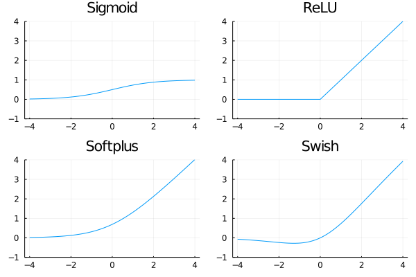

Theory of neural networks
Neural network appeared for the first time decades ago but were almost forgotten after a few years. Their resurgence in the last one or two decades is mainly due to the available computational power and their impressive list of applications which include
- One of the first application was an automatic reading of postal codes to automatize the sorting of postcards. Since only ten black and white digits can appear at five predetermined locations, simple networks could be used.
- A similar type of neural networks (convolutional) is used in autonomous vehicles to provide information about cars, pedestrians or traffic signs. These networks also use bounding boxes to specify the position of the desired object.
- While the previous techniques used 2D structure of the input (image), recurrent neural networks are used for series (text, sound). The major application are automatic translations.
- Another applications include generating new content. While there may exist useful applications such as artistic composition (music or writing scripts), these networks are often used to generate fake content (news, images).
Neural networks
The first three bullets from the previous paragraph are all used for classification. Even though neural networks can be similarly used for regression, this usage is not so developed. The idea is the same as for linear networks. For an input $x$ with a label $y$ and a classifier $f$, it minimizes the loss between the prediction $f(x)$ and label $y$. Having $n$ samples, this results in
\[\operatorname{minimize}\qquad \sum_{i=1}^n \operatorname{loss}(f(x_i), y_i).\]
The previous lecture used the linear classifier $f(x)=w^\top x$ and the cross-entropy loss for classification and the squared $l_2$ norm $\operatorname{loss}(\hat y, y) = (\hat y - y)^2$ for regression.
The main ideas of neural networks is to use more complex function $f$ with a certain structure such that:
- It has a good approximative quality.
- It does not contain many parameters to learn (train).
- The computation of derivatives (training) is simple.
Layers
The previous three bullets were achieved in an ellegant way by representing the neural network via a layered structure. The input goes into the first layers, the output of the first layer goes into the second layer and so on. Mathematically speaking, a network $f$ with $M$ layers has the structure
\[f(x) = (f_M \circ \dots \circ f_1)(x),\]
where $f_1,\dots,f_M$ are individual layers. Since two layers which are not next to each other (such as the first and the third layer) are never directly connected (with the exception of skip connections), the function value can be propagrated through the network in a simple way. The same holds true for the gradients which can be easily computed via chain rules.

Dense layer
Dense layer is the simplest layer which has the form
\[f_m(z) = l(W_mz + b_m),\]
where $W_m$ is a matrix of appropriate dimensions, $b_m$ is the bias (shift) and $l$ is an activation function. The activation function is usually written as $l:\mathbb{R}\to\mathbb{R}$ and its operation on a vector $W_mz + b_m$ is understood componentwise. Examples of the activation functions include:
\[\begin{aligned} &\text{Sigmoid:}&l(x) &= \frac{1}{1+e^{-x}} ,\\ &\text{ReLU:}&l(x) &= \operatorname{max}\{0,x\}, \\ &\text{Softplus:}&l(x) &= \log(1+e^x), \\ &\text{Swish:}&l(x) &= \frac{x}{1+e^{-x}} ,\\ \end{aligned}\]

Other layers
There are many other layers (convolutional, recurrent, pooling, ...) which we will go through in the next lesson.
Approximation quality
Even shallow neural networks (not many layers) are able to approximate any continuous function as the next theorem states.
Let $g:[a,b]\to \mathbb{R}$ be a continuous function defined on an interval. Then for every $\varepsilon>0$, there is a neural network $f$ such that $\|f-g\|_{\infty}\le \varepsilon$.
Moreover, this network can be chosen as a chain of the following two layers:
- Dense layer with ReLU activation function.
- Dense layer with identity activation function.
As the proof suggest (Exercise 1), the price to pay is that the network needs to be extremely wide (lots of hidden neurons). x